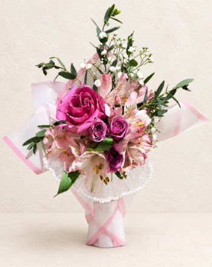
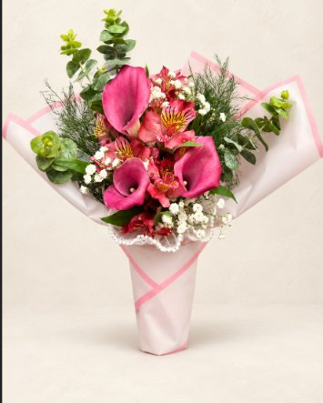
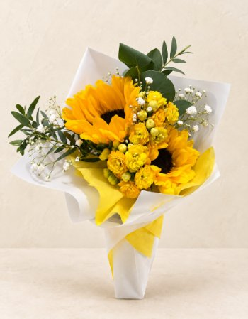
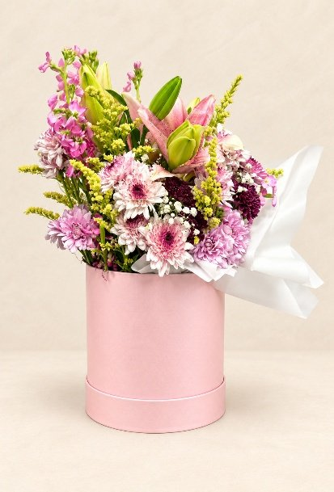
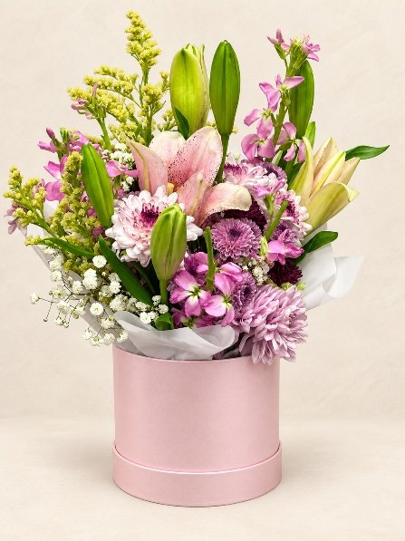
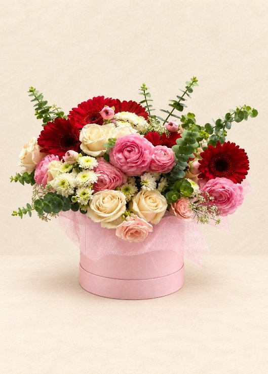
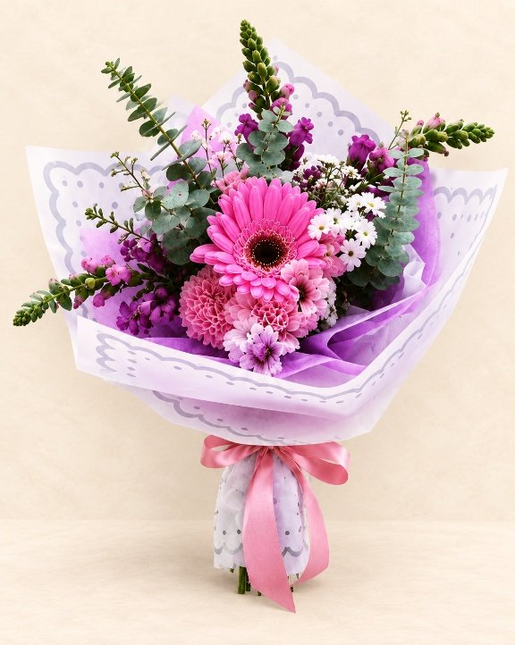
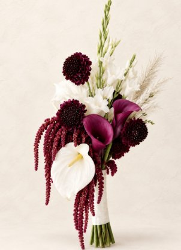

Rosas · Alstroemerias
Susurro Rosa
Una composición delicada de tonos rosados y violetas, terminada con detalles de perlas.
$25.000
Pedir por WhatsAppEstudio floral · Bogotá
Ramos creados con intención y delicadeza, que convierten momentos sencillos en recuerdos.
Hecho con gracia ·
Un pequeño jardín para celebrar lo que importa.
Composiciones florales de carácter natural, preparadas con atención a los detalles y sin perder la esencia de cada flor.
Selección actual
Nuestras composiciones de siempre, en tamaño mediano y listas para entregar. Cada ramo puede presentar pequeñas variaciones naturales.

Rosas · Alstroemerias
Una composición delicada de tonos rosados y violetas, terminada con detalles de perlas.
$25.000
Pedir por WhatsApp
Calas · Flores de temporada
Color intenso, movimiento natural y una presencia que transforma cualquier momento.
$25.000
Pedir por WhatsApp
Girasoles · Flores amarillas
Una pieza luminosa y expresiva para regalar alegría sin necesidad de muchas palabras.
$25.000
Pedir por WhatsAppOcasiones y eventos
Composiciones más grandes, montadas en caja rígida. Pensadas para cumpleaños, aniversarios y detalles de empresa.

Lirios · Gerberas · Statice
Tonos suaves y volumen generoso, con lirios abiertos y follaje de temporada.
Precio por WhatsApp
Cotizar por WhatsApp
Lirios · Crisantemos · Solidago
Una caja alta, con lirios todavía en botón para que siga abriéndose durante días.
Precio por WhatsApp
Cotizar por WhatsAppPiezas grandes
Los ramos de mayor tamaño, con envoltura trabajada y mucho volumen. Se preparan bajo pedido con un día de anticipación.

Rosas · Gerberas · Ranúnculos
La pieza más grande del estudio: rosas, gerberas y eucalipto en un montaje amplio y abierto.
$300.000
Pedir por WhatsAppGirasoles · Hortensias · Rosas
Azul profundo con girasoles al centro. Uno de los ramos que más se piden para graduaciones.
$100.000
Pedir por WhatsApp
Gerberas · Dalias · Eucalipto
Gerberas y dalias en papel lila, con eucalipto que le da altura y aroma.
$50.000
Pedir por WhatsApp
Para novias
Los ramos de novia no tienen precio fijo: cada uno se diseña contigo. Escogemos juntas las flores, la paleta, el tamaño y el acabado del mango, y te enviamos una propuesta antes de armarlo.
Nuestra esencia
En Garden of Grace creamos ramos con delicadeza, intención y atención a cada detalle. Combinamos la belleza natural de las flores con un estilo especial para transformar sentimientos y momentos sencillos en recuerdos que permanecen.
Garden of Grace
Hablemos
Escríbenos para pedir un ramo, cotizar un evento o resolver cualquier duda. Hacemos domicilios en Bogotá y preparamos los pedidos con un día de anticipación.